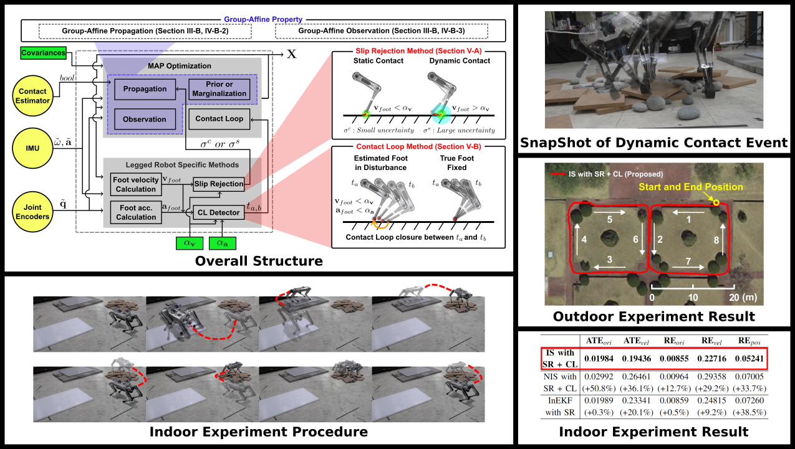

IEEE Transacion on Robotics, acceped for publication, 2023
Ziwon Yoon *, (1) Joon-Ha Kim *, (1) Hae-won Park (1)
* These authors contributed equally (1) Korea Advanced Institute of Science and Technology

Abstract
This work proposes an invariant smoother for legged robot state estimation with the measurement of an inertial measurement unit (IMU) and leg kinematics while assuming static foot contact. Because the proposed smoother is formulated with the residual functions with group-affine property, their Jacobians become independent from current state estimates. These state-independent Jacobians lead to better convergence properties in optimizing the cost in the smoother, especially under dynamic contact events. The proposed Slip Rejection method increases the uncertainty of static contact assumption when the robot has dynamic contact events. The estimated foot velocity, which is utilized to detect the dynamic contact events, is re-evaluated within the preserving time window. We also propose the Contact Loop method, a new measurement model asserting that foot position remains constant over multiple timesteps during stable contact. The proposed estimator is tested through online experiments, including indoor and 160 m-long outdoor experiments, and compared against state-of-the-art algorithms.